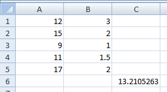

Stocker de l'information : les variables et les constantes
Exercices
Exercice 1
Soit la plage de cellule A1:B5 contenant dans la colonne A les notes d’un étudiant dans cinq modules différents et dans la colonne B le coefficient de chaque module. Ecrire une procédure qui permet de calculer la moyenne de l’étudiant et l'afficher le résultat dans la cellule C6.

Utiliser une variable moyenne à laquelle on ajoutera toutes les notes, pondérées par les coefficients et qui sera affichée dans la cellule C6.
Hide
Sub moyenne()
Dim tot As Double
tot = Range("B1").Value + Range("B2").Value + Range("B3").Value + Range("B4").Value + Range("B5").Value
Dim mean As Double
mean = Range("A1").Value * Range("B1").Value
mean = mean + Range("A2").Value * Range("B2").Value
mean = mean + Range("A3").Value * Range("B3").Value
mean = mean + Range("A4").Value * Range("B4").Value
mean = mean + Range("A5").Value * Range("B5").Value
Range("C6").Value = mean / tot
End Sub
tot correspond à la somme des coefficients. On ajoute toutes les notes (colonne A) multipliées par le coefficient correspondant (colonne B) à la variable mean qu'on divise par tot. Enfin, la varigable mean est intégrée à la cellule C6.
Hide
Exercice 2
En se servant de variables, écrire une procédure qui permet de permuter les contenus des cellules A1 et B1.
Il faut une variable qui stocke la valeur en B1 pendant que la cellule B1 reçoit la valeur de la cellule A1. La valeur contenue dans la variable est ensuite affectée à la cellule A1.
Hide
Sub permute()
Dim A As Variant
A = Range("B1").Value
Range("B1").Value = Range("A1").Value
Range("A1").Value = A
End Sub
Hide
Félicitations, vous avez terminé les exercices de ce chapitre.
Vous pouvez passer au chapitre suivant en cliquant sur
ce lien ou sur la flèche droite en dessous. Vous pouvez également retourner sur le chapitre en cours en cliquant sur la flèche gauche.